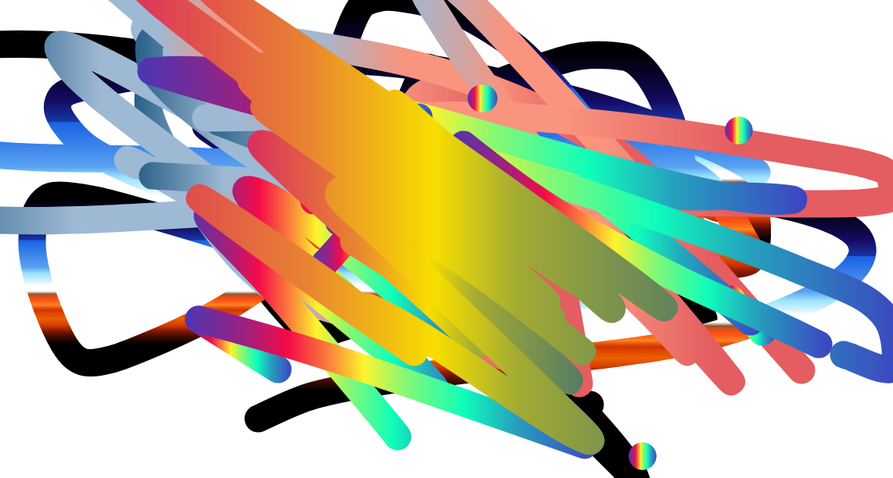

Welcome to purplepedia. this is an art blog. No, this is not an encyclopedia. Ijust thought the name sounded cool. Not that the art in the blog has anything to do with purple, either. But it most likely will contain some purple. It is, after all, my favorite color. most of the work on this blog is done on sketch.io. It is a very cool drawing website. i have the link down here:
THIS IS IT!!!!!And this is just an example of what's on here:
